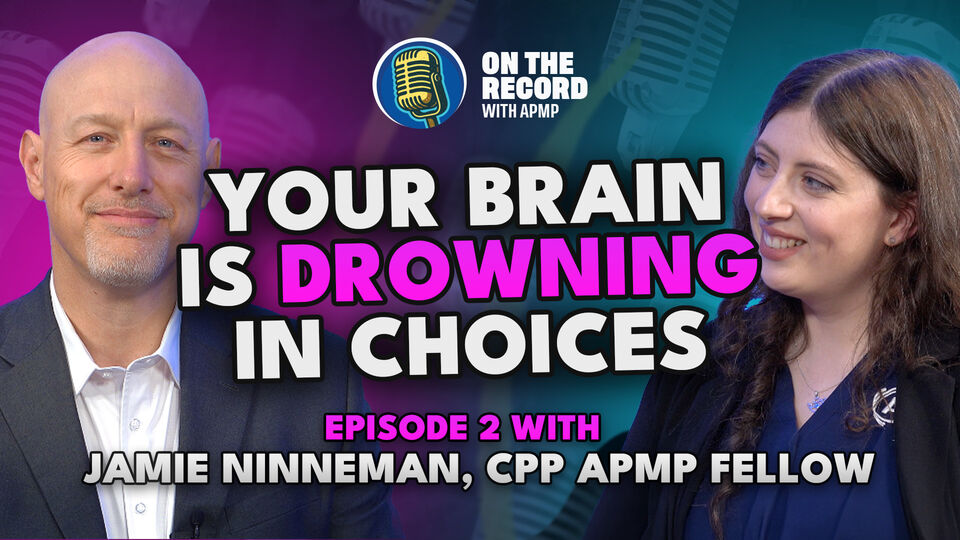
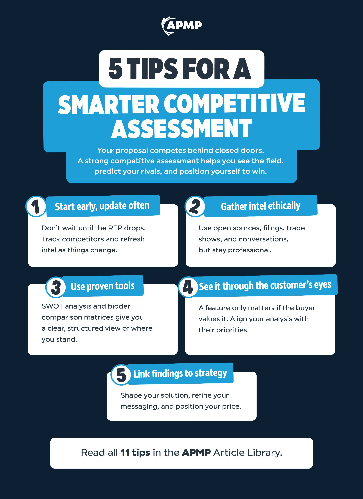
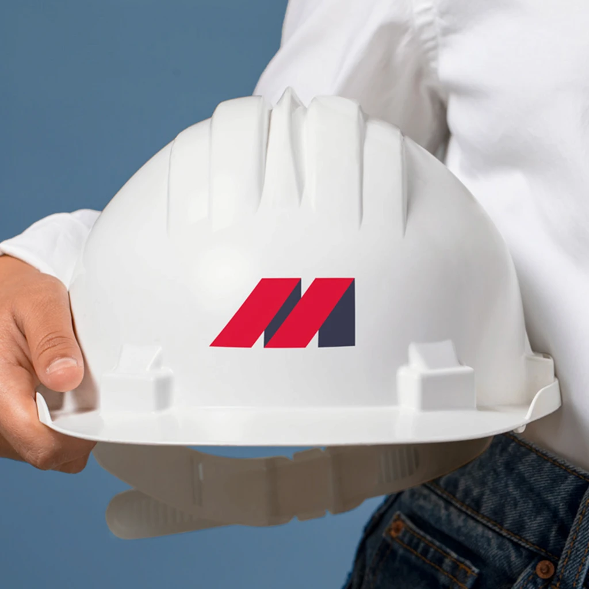

JoshuaDeakin
Award-winning senior designer working across graphic design, brand identity, print, motion and video.
I design everything APMP puts its name on.
One designer, six disciplines: brand, video, publications, signage, digital campaigns and member experience, across marketing, events and membership.
.jpg)


Selected brand work

Murray's Plant HireOne mark, three readings: an M, a screw thread and a bolt.Brand Identity → Applewise BakeryPie lattice and MacLeod tartan fused into a single mark.Brand Identity →
Applewise BakeryPie lattice and MacLeod tartan fused into a single mark.Brand Identity →
 FreshbiteA meal-kit rebrand that is premium without the cold.Brand Identity →
FreshbiteA meal-kit rebrand that is premium without the cold.Brand Identity →
 Nishikigoi with OliverLogo, thumbnails and channel art from one system.YouTube Branding →
Nishikigoi with OliverLogo, thumbnails and channel art from one system.YouTube Branding →
 Midgard Greenhouse & NurseryA Norse-rooted identity built to embroider, print and fly.Brand Identity →
Midgard Greenhouse & NurseryA Norse-rooted identity built to embroider, print and fly.Brand Identity →
 RizenA hand-drawn phoenix mascot for a rising eSports team.eSports Logo →
RizenA hand-drawn phoenix mascot for a rising eSports team.eSports Logo →
Where I've worked
Designing with purpose since day one.
It started with a game case. I was 14 when Saints Row caught my eye, not the game but the cover. A skyline built from firearms that told you exactly what you were in for before you'd even opened the box. That moment of realising design could do that, communicate a whole world in a single image; that never really left me.
I studied Graphic Design at City of Glasgow College, and while most students were building hypothetical portfolios, I was already working with real clients - designing mascot logos for eSports teams, learning that deadlines and difficult briefs are where you actually grow.
Outside the studio I'm the kind of person who watches a show and then immediately falls down four hours of theory breakdowns about it. I pick things apart to see what makes them work - whether that's a film edit, a typeface choice, or whatever's new in VR. When I need to switch off completely, I get out on my Kawasaki and let Scotland do the rest.
That same curiosity is what I bring to every brief. I'm genuinely interested in why things look the way they do - and obsessed with making them look better.
Let's talk.
Whether it's a project, a collaboration, or just a conversation about design - I'm always happy to connect.


.jpg)
.jpg)
.jpg)
.jpg)